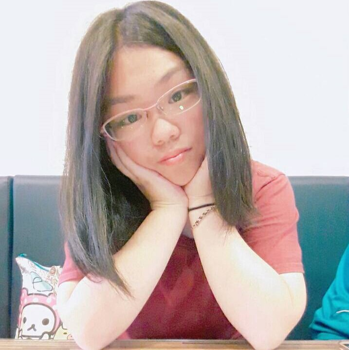
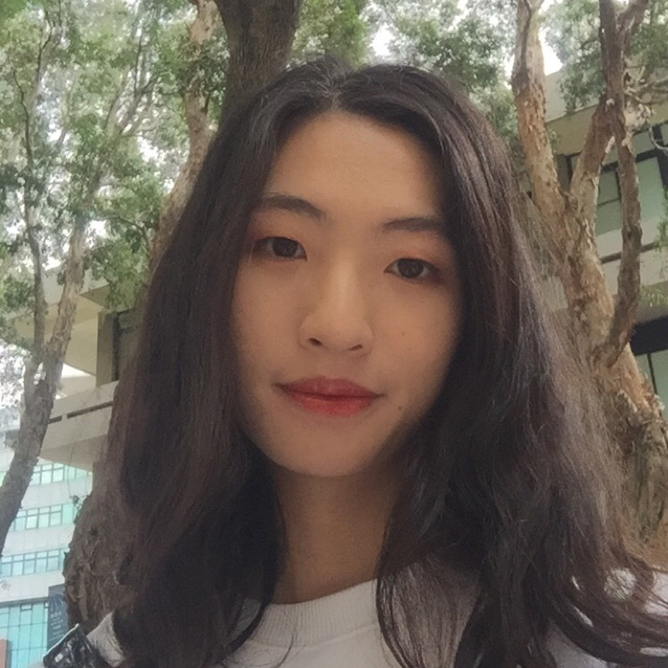
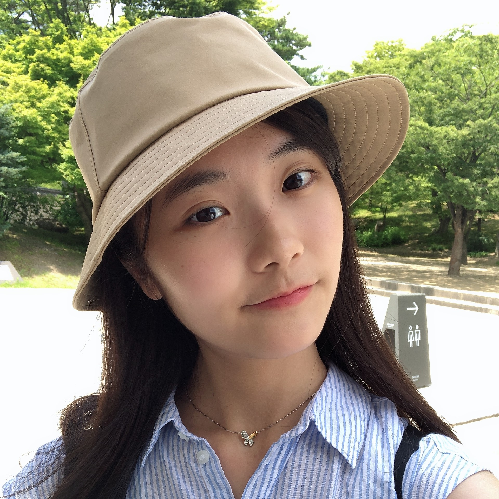
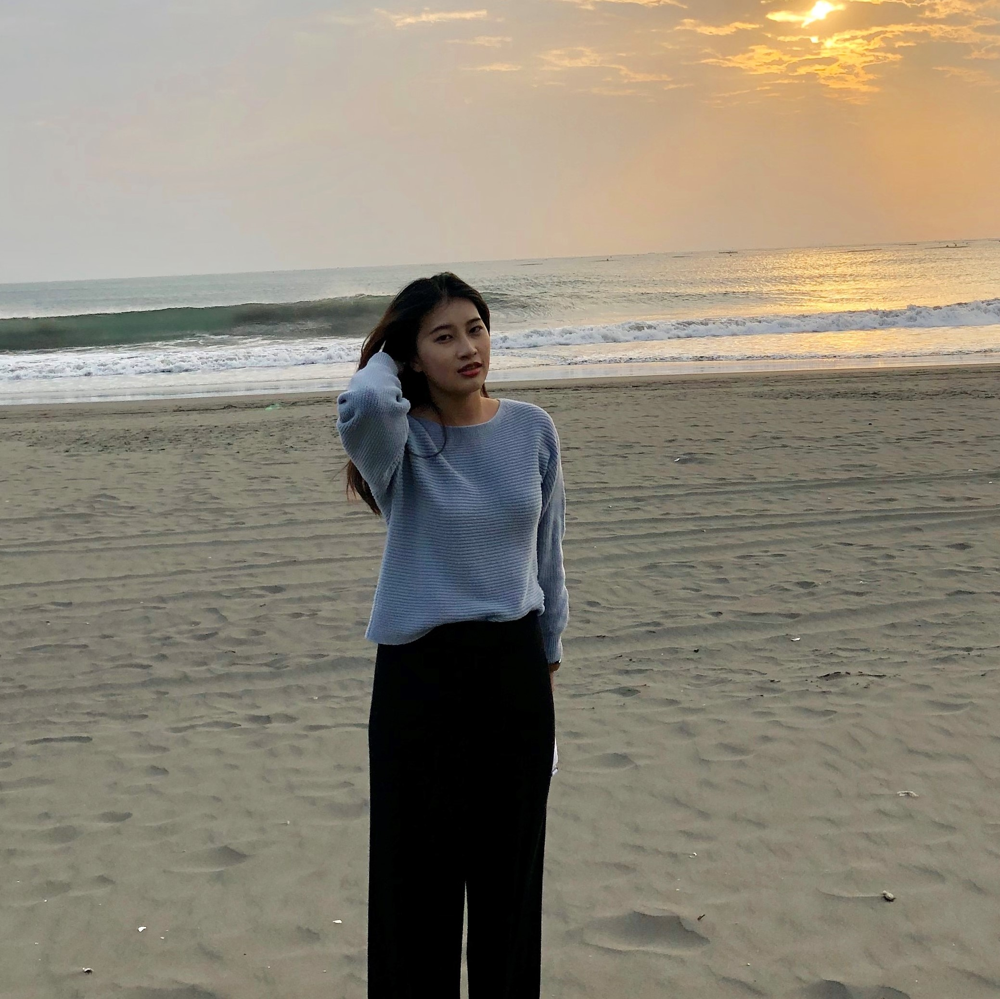

李欣汶
10544107
在這一年來的專題中，雖然我們組也曾有過摩擦，初審成績公布後，一度懷疑我們到底是哪裡不好，好幾天都沉浸在失敗的情緒中，但大家還是一起努力走到現在了。本來全國比賽也很擔心連佳作都沒得到，那真的會打擊超大，幸好我們的努力沒有白費，也很開心能在搶鮮大賽拿到冠軍，複審也差一點就拿到第三名。很開心我的組員是這群可愛的人，也很謝謝學長姐、老師的幫忙。

張嘉晏
10540123
在製作專題的過程中，其實我學到的不只是技術方面的實作，還有團隊合作。其實在最一開始時，我對於初賽的成績心灰意冷，我太沒自信，害怕我們所作的主題方向是錯的，但因為組員們堅持做到底，我們就一直做下去，而過程中我在技術方面非常卡，但幸好有學長姊的幫助，可以順利完成任務。還有在這之中我認為溝通非常重要，要清楚告訴對方自己遇到的困難才能讓對方知道現在的問題，總之在做專題的過程中不只是技術面向的提升，還有與人之間合作也有讓我學到很多東西。

張鈞婷
10544208
在這一年的專題中，從一開始在構想題目，就每天都在倒數結束的一天，而到了複審結束的那天，都覺得一切很不可思議，雖然我們組在各方面可能都沒有比其他人厲害，在溝通上也有出現問題的時候，但很慶幸的是我們一起走過來了，也沒有想過我們能在其他比賽中得獎，很高興能在專題中學到了那麼多，以後會很懷念和你們一起做事的時光的!

林俞萱
10544231
在這一年的專題中學習到許多東西，從剛開始的想題目，到比賽，不管是技術或報告都學習到很多，同時也在團隊中學到如何去溝通、取得共識，也與組員建立了感情，謝謝我的組員，也謝謝這一路上有幫助我們的所有人。